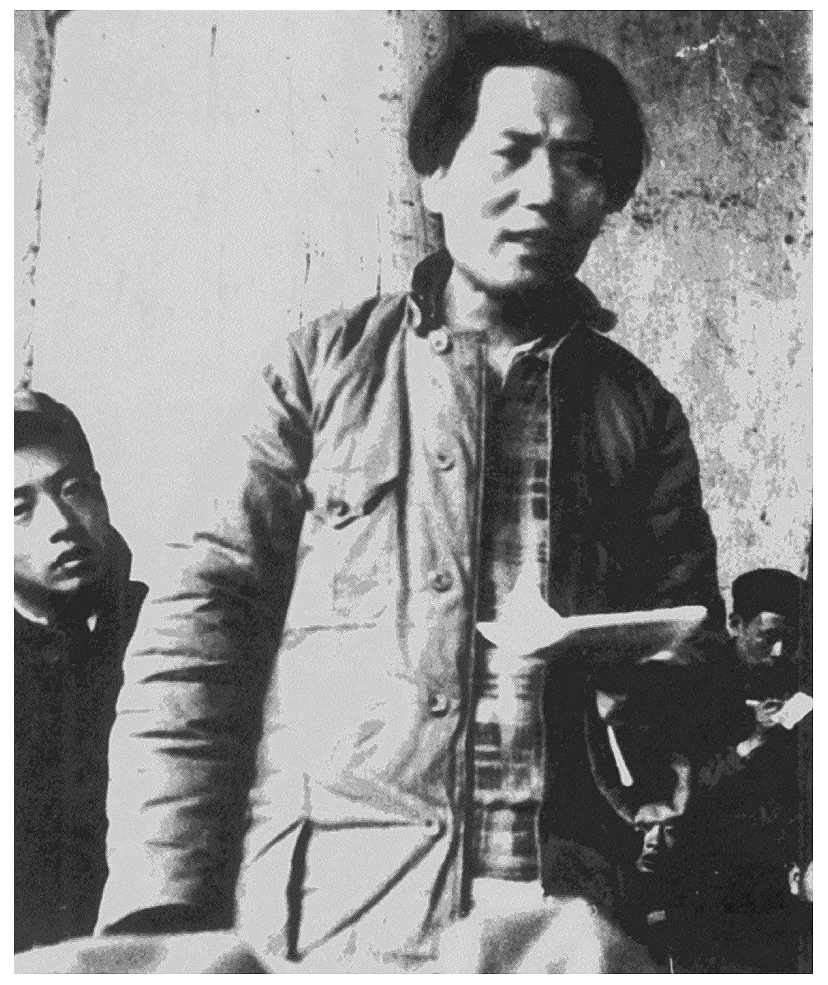

在中国，孙中山于1911年建立了共和国，组织了他的政党国民党（见第三十一章第二节）。尽管孙是总统，是名义上的国家首领，但实权却掌握在官僚和军事领导人手中，他们作为军阀控制着这个国家。1925年孙中山去世后，蒋介石成为国民党和中国的领袖。在他的领导下，在修建铁路、公路，建立工业，改进公共卫生和教育等方面取得了重大进展。
但是，蒋介石的改革方案有着严重的漏洞，这些漏洞最终被证明是致命的。亟需的土地改革被忽视了，因为农村地区的国民党被反对任何变革的地主所控制。蒋介石一党制的独裁政府阻止了民主政治的发展，因此，反对党党派不可能通过法律手段坚持自己的权利，革命才是唯一的选择。如果国民党政权享有长期的和平，那么，它的这些弱点也许会逐渐得到克服。但是，它却没有这样的机会，因为它有两大死敌：国内的共产党人和国外的日本人。

图259 1937年，中国共产党的领袖毛泽东在中国西北的陕西发表演说。
1921年7月，中国共产党在上海成立，其建立一个更加公正的社会的纲领吸引了许多学生和知识分子。孙中山曾与共产党紧密合作，但蒋介石不；他强烈反对共产党人的激进社会主义。他发动了五次“围剿战役”，但共产党因其“打土豪，分田地”的政策争取了广大农民而幸存下来。毛泽东是一位杰出的共产党领袖，他无视莫斯科的共产国际，制定出新的革命策略。他拒绝了只能依靠城市无产阶级进行革命这一传统的马克思主义原则。他根据对农村的直接考察断定，占人口70%的贫农是“革命的先锋……没有贫农便没有革命”。这对莫斯科来说纯属异端邪说，但毛自行其是，将农民组织起来，建立了独立的军队和政府。
在与蒋介石的“围剿”进行了数年斗争之后，毛最终冲出包围，到达西北诸省，在那里艰苦奋斗，建立了根据地。由于他的土地改革政策和日本人在东部沿海的进攻削弱了蒋的政府，他渐渐地扩大了他的根据地。日本人的侵略和共产党的强大加在一起最终迫使蒋介石于1949年逃往台湾地区，毛泽东成为中国大陆的领导者。
[推荐读物]
全面概括第一次世界大战后殖民地起义的著作有：H. Kohn所著的The Age of Nationalism：The First Era of Global History（Harper & Row出版社，1962）的相关部分；M. Edwardes所著的Asia in the European Age，1498-1955（Thames & Hudson出版社，1961）和J. Romein所著的The Asian Century（George Allen & Unwin出版社，1962）。
M. Kent所编的The Great Powers and the End of the Ottoman Empire（George Allen & Unwin出版社，1984）分析了涉及中东的第一次世界大战的外交。关于凯末尔统治下的土耳其的复兴，见S. R. Sonyel所著的Turkish Diplomacy，1918-1923：Mustafa Kemal and the Turkish National Movement（Sage出版社，1975）。
关于阿拉伯民族主义的觉醒，见N. Safran所著的Egypt in Search of Political Community（Harvard University出版社，1961）；Z. N. Zeine所著的The Struggle for Arab Independence：Western Diplomacy at the Rise and Fall of Feisal’s Kingdom in Syria（Khayat出版社，1960）；A. Hourani所著的Arabic Thought in the Liberal Age 1798-1939（Oxford University出版社，1962）和S. G. Haim编著的Arab Nationalism：An Anthology（University of California出版社，1964）。
关于印度的杰出人物的著作有：M. K. Gandhi所著的An Autobiography：The Story of My Experiments with Truth（Beacon出版社，1957）和All Men Are Brothers：Life and Thoughts of Mahatma Gandhi as Told in His Own Words（UNESCO，1958）以及E. Erikson所著的Gandhi’s Truth（W. W. Norton出版社，1970）和Toward Freedom：The Autobiography of Jawaharlal Nehru（Harper & Row出版社，1941）。
关于中国的杰出人物的著作有：H. Z. Schiffrin所著的Sun Yat-Sen and the Origins of the 1911 Revolution（University of California出版社，1969）；E. Hahn所著的Chiang Kai-Shek： An Unauthorized Biography（Doubleday出版社，1955）和M. Meisner所著的Mao’s China（Free出版社，1977）。论及两次世界大战之间这段时期最有用的著作有：L. Bianco所著的Origins of the Chinese Revolution 1915—1949（Stanford University出版社，1971）；H. R. Issacs所著的The Tragedy of the Chinese Revolution，2nd rev. ed.（Atheneum出版社，1968）和J. E. Sheridan所著的China in Disintegration：The Republican Era in Chinese History，1912-1949（Free出版社，1975）。
[注释]
[1]Cited by W. R. Polk, “What the Arabs Think,” Headline Series, No. 96，p. 38.